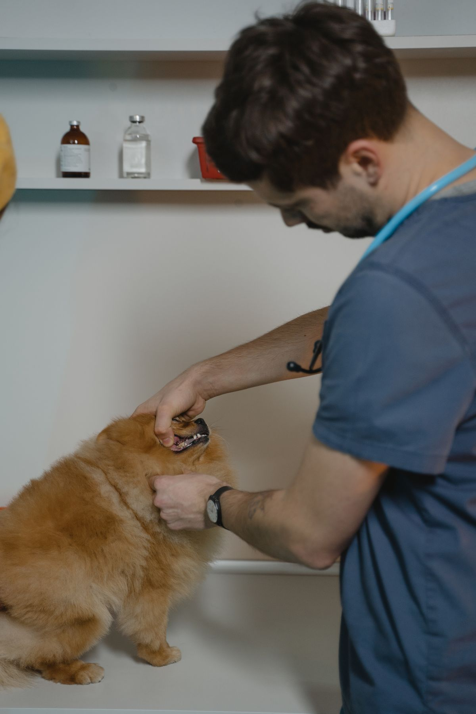

O que oferecemos
Cuidado completo, do check-up ao banho

Consultas & Check-ups
Avaliação clínica completa, com diagnóstico honesto e explicado em detalhes.
Vacinação
Calendário de vacinas em dia, com acompanhamento e lembretes para cada pet.
Homeopatia Veterinária
Terapias alternativas conduzidas pela Dra. Adriana, somando cuidado ao tratamento.

Banho & Tosa
Centro de estética elogiado pela organização e limpeza, no mesmo endereço.